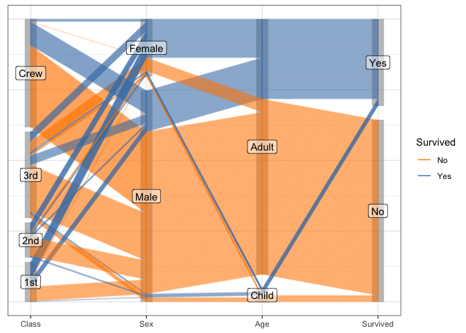
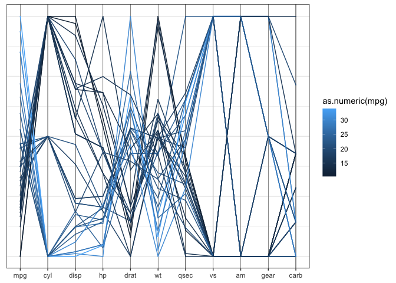
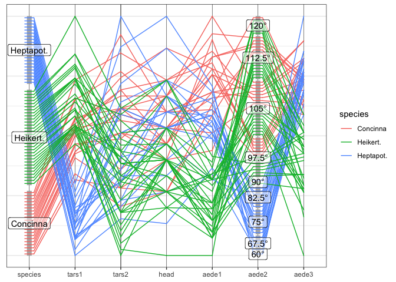
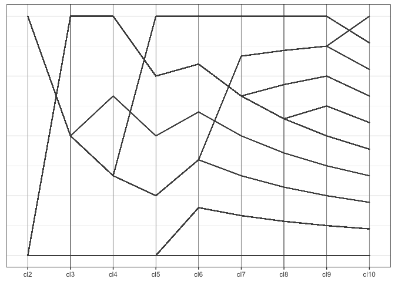

Installation
ggpcp is available from Github:
# install.packages("devtools")
remotes::install_github("heike/ggpcp")Getting Started
Load the library
Load a dataset
A first parallel coordinate plot
Parallel coordinate plots put a number of variables side-by-side - similar to side-by-side dotplots, and connect the dots belonging to the same observational unit by lines.
In this implementation, we are separating the data wrangling part from the visual rendering. Three main functions are part of the data wrangling: data selection, data scaling, and addressing ties in (categorical) data.
Data manipulation
Data selection
pcp_select(data, ...) allows a selection of variables to be included in the parallel coordinate plot. Variables can be specified by
- position, e.g.
1:4, 7, 5, 4, - name, e.g.
class,age,sex,aede1:aede3or - selector, e.g.
starts_with("aede"), see?tidyselect::select_helpers
or any combination thereof. Variables can be selected multiple times and will then be included in the data and the resulting plot multiple times. Because variables need to be uniquely named internally, multiply selected variables will be included in the plot with a suffix of <.number>, familiar from how multiple occurrences of the same variable names are resolved in data frames. The order in which variables are selected determines the order in which the corresponding axis is drawn in the parallel coordinate plots. pcp_select transforms the selected variables to long form and
Scaling
pcp_scale(data, method) scales the values on each axis and determines the relative relationship of the axes to each other.
method is a character string specifying the method to be used when transforming the values of each variable into a common y axis. By default, the method uniminmax is chosen, which univariately scales each variable into a range of [0,1] with a minimum at 0 and the maximum at 1. globalminmax maps the values across all axes into a an interval of [0,1]. Except for the scale on the y axis, this results a similar picture to raw, in which all values are left unscaled. ‘?pcp_scale’ gives more details.
Breaking Ties on categorical axes
pcp_arrange(data, method, space) provides a rescaling of values on categorical axes to break ties. method is a parameter specifying which variables to use to break ties. The two implemented functions are from-left and from-right, meaning that ties are broken using a hierarchical ordering using variables’ values from the left or the right, respectively. The parameter scale specifies the size of the y axis to be used for spacing categorical variables apart. By default, 5% of the axis are used for spacing.
Data Rendering
Finally, the data is piped into a call to ggplot. Note that the default mappings for parallel coordinate plots are provided to the call using aes_pcp. This function provides a wrapper to ggplot2::aes and fills in default values for x and y axes as well as necessary meta information, such as the type of a variable shown and orderings of levels in factor variables.
aes_pcp()## Aesthetic mapping:
## * `x` -> `pcp_x`
## * `y` -> `pcp_y`
## * `yend` -> `pcp_yend`
## * `class` -> `pcp_class`
## * `group` -> `pcp_id`
## * `level` -> `pcp_level`
## * `label` -> `pcp_level`The geom geom_pcp draws line segments to connect positions of the same observational unit across axes:
flea %>%
pcp_select(species, 2:7, species) %>%
pcp_scale(method="uniminmax") %>%
pcp_arrange() %>%
ggplot(aes_pcp()) +
geom_pcp_axes() +
geom_pcp(aes(colour = species))Note that the variable species shows up twice in the plot - once as the rightmost variables, once as the leftmost one. species is a categorical variable. ggpcp deals with categorical variables by using the space on the y axis of a categorical variable to spread points out evenly. This allows us to (a) estimate the frequency of each level, and (b) track individual points through the parallel coordinate plot even in the presence of categorical variables.
The layer approach
ggpcp implements several geoms to work in a parallel coordinate plot setting
-
geom_pcpis a wrapper for the standard layer of drawing line segments for each observation across the specified variables -
geom_pcp_axesdraws vertical lines at the position of each of the axes. -
geom_pcp_boxesdraws rectangles framing each level of a categorical variable. The parameterboxwidthspecifies the width of these rectangles (1 is the width between successive variables).boxwidthis set to 0.2 by default. -
geom_pcp_labelsplaces a label center on each rectangle of a categorical variable. XXX The familiar parametersnudge_xandnudge_ywork as usual to move labels. XXX HH: need to check that that’s true
flea %>%
pcp_select(1:7) %>%
pcp_scale(method="uniminmax") %>%
pcp_arrange() %>%
ggplot(aes_pcp()) +
geom_pcp_axes() +
geom_pcp_boxes(boxwidth = 0.1, fill="grey70") +
geom_pcp(aes(colour = species), overplot = "none") +
geom_pcp_labels() Examples
Another look at the Titanic Data
For categorical variables ggpcp presents a result similar to parsets by Kosara et al (2013).
titanic <- as.data.frame(Titanic)
titanic <- titanic %>%
purrr::map(.f = function(x) rep(x, titanic$Freq)) %>%
as.data.frame() %>% select(-Freq)
titanic %>%
pcp_select(1:4) %>%
pcp_scale() %>%
pcp_arrange(method="from-right") %>%
ggplot(aes_pcp()) +
geom_pcp_boxes(boxwidth=0.1) +
geom_pcp(aes(colour = Survived), alpha = 0.1, axiswidth = c(0,0)) +
scale_colour_manual(values=c("darkorange", "steelblue")) +
guides(colour=guide_legend(override.aes = list(alpha=1))) +
geom_pcp_labels() +
scale_x_discrete(expand = expansion(add=0.2))
Switching the ordering method in pcp_arrange to from-both allows us to focus on the two-dimensional relationships between variables on adjacent axes:
titanic %>%
pcp_select(1:4) %>%
pcp_scale() %>%
pcp_arrange(method="from-both") %>%
ggplot(aes_pcp()) +
geom_pcp_boxes(boxwidth=0.1) +
geom_pcp(aes(colour = Survived), alpha = 0.1) +
scale_colour_manual(values=c("darkorange", "steelblue")) +
guides(colour=guide_legend(override.aes = list(alpha=1))) +
geom_pcp_labels() +
scale_x_discrete(expand = expansion(add=0.2))## Scale for x is already present.
## Adding another scale for x, which will replace the existing scale.Note that now the observations within each variable level are resorted before line segments are connected to adjacent axes. This allows us to keep track of individual observations throughout the parallel coordinate plot even in the presence of thousands of observations as in the example of persons on board the Titanic.
Mixed data: categorical and numeric variables
while the mtcars data is quite old, it serves a good purpose here. All of the variables are coded as numeric variables, even when they should, in fact, be factor variables. In a standard parallel coordinate plot we get the usual uninformative fishnet between categorical variables such as vs, am, and gear, also visible for variable cyl:
mtcars %>%
pcp_select(1:ncol(mtcars)) %>%
pcp_scale() %>%
ggplot(aes_pcp()) +
geom_pcp_axes() +
geom_pcp(aes(colour = as.numeric(mpg)))
Once the variables are coded properly as factor variables, we get a much more informative view with a generalized parallel coordinate plot: Additionally, we draw separate facets for cars with higher and lower mileage (above 20 mpg versus below 20 mpg).
mtcars %>%
mutate(cyl = factor(cyl),
vs = factor(vs),
am = factor(am),
gear=factor(gear),
carb = factor(carb),
`liter/100km` = 1/(mpg*1.6/4),
`-disp` = -disp) %>%
arrange(mpg) %>% # draw lines from lowest to highest mileage
pcp_select(1,12, 2:11,13) %>%
pcp_scale() %>%
pcp_arrange(method="from-left") %>%
ggplot(aes_pcp()) +
geom_pcp_axes() +
geom_pcp_boxes(fill="grey80") +
geom_pcp(aes(colour = as.numeric(mpg)), size = 1, overplot = "none") +
scale_colour_gradient2("mpg", mid="grey80", midpoint = 20, low="darkred", high="darkblue") +
theme_bw() +
facet_grid(mpg>20~., labeller = "label_both")![Parallel coordinate plot of the mtcars data. In a variation to the previous plot, two facets of the plot are drawn: On top, cars with at most 20 miles per gallon are included, the bottom plot shows cars that achieve more than 20 miles per 1 gallon of gas. The variables cyl, vs, am, gear, and curb are included as factor variables. Additionally, a variable called liter/100km is introduced as the European measure for efficiency. The variable disp is included into the plot with its values multiplied by -1. This flips the order on that axis. Low efficiency cars have generally high number of values on cyl, disp, horsepower, and weight, and low values on drat (Rear axle ratio).](reference/figures/mtcars-nicer-1.png)
What becomes obvious in this plot, is that fuel consumption of each car measured in miles per gallons (mpg), encoded as the first variable in the plot and as color of the lines - is correlated strongly with all of the variables, not just the numeric variables. A large number of cylinders (cyl), a V-shaped engine (vs = 0), an automatic transmission (am = 0), a low number of forward gears and a high number of carburetors are related to a low value of mpg (red lines).
Note: the order in which line segments are drawn depends on the order in which observations are listed in the data set. In the previous example, lines are ordered by the corresponding mileage from lowest to highest. Line segments of cars with the lowest mileage are drawn first (in darker shades of red), lines for cars with higher mileage are drawn subsequently. The car with the highest mileage is drawn in dark blue at the top.
Bigger Example
One application for generalized parallel coordinate plots is their use for visualizing clusters.
data(nasa, package="ggpcp")The nasa data, made available as part of the ggpcp package provides and extension to the data provided in the GGally package, was used in the 2006 ASA Expo. It consists of monthly measurements of several climate variables, such as cloud coverage, temperature, pressure, and ozone values, captured on a 24x24 grid across Central America between 1995 and 2000.
We grouped locations using all January and July measurements of all climate variables using a hierarchical clustering based on Ward’s distance. The resulting clusters can then be summarized visually. What we see is that the clusters have a very distinct geographic pattern (tile plot).
wide %>% separate(id, into=c("y", "x"), remove = FALSE) %>%
mutate(x = as.numeric(x), y = as.numeric(y)) %>%
ggplot(aes(x = x, y=y, fill=factor(cl7))) +
geom_tile() + scale_fill_brewer("Cluster", palette = "Paired") +
xlab("Latitude") + ylab("Longitude") +
coord_equal()
Visualizing the cluster process
A regular parallel coordinate plot allows us to visualize a part of the dendrogram corresponding to the hierarchical clustering.
wide %>%
pcp_select(86:94) %>%
pcp_scale() %>%
ggplot(aes_pcp()) +
geom_pcp_axes() +
geom_pcp() +
xlab("Number of clusters")
Using the generalized parallel coordinate plots we can visualize the clustering process in plots similar to what Schonlau (2002, 2004) coined the clustergram:
wide <- wide %>%
mutate(
cl2 = factor(cl2),
cl3 = factor(cl3),
cl4 = factor(cl4),
cl5 = factor(cl5),
cl6 = factor(cl6),
cl7 = factor(cl7),
cl8 = factor(cl8),
cl9 = factor(cl9),
cl10 = factor(cl10)
)
wide %>%
pcp_select(86:94) %>%
pcp_scale() %>%
pcp_arrange() %>%
ggplot(aes_pcp()) +
geom_pcp_boxes(boxwidth=0.1) +
geom_pcp(aes(colour = cl10), alpha = 0.25) +
xlab("Number of clusters") +
scale_colour_brewer("Cluster", palette="Paired") +
guides(colour=guide_legend(override.aes = list(alpha=1)), reverse = TRUE)
Along the x-axis the number of clusters are plotted with one pcp axis each, from two clusters (left) to 10 clusters (right most pcp axis). Each observation is drawn as a multi-segmented line and colored by its assignment in the ten-cluster solution. This gives an excerpt of the dendrogram that allows an assessment of the number of observations in each cluster as well as the relationship between successive clustering steps.
Related work
Parallel coordinate plots have been implemented in analysis software since the mid 1980s (Inselberg 1985, Wegman 1990). Several packages in R are dedicated to visualizing parallel coordinate plots.
Using base plots the main function for drawing parallel coordinate plots is parcoord implemented in MASS (Venables and Ripley 2004). The package gclus (Hurley 2019) implements cparcoord to include panel color as a representation of the strength of a correlation between neighboring axes.
Within the ggplot2 environment there are several packages implementing parallel coordinate plots. For numeric variables there’s the function ggparcoord from the GGally package, for categorical variables the ggparallel package provides an implementation of PCP-like plots, such as the Hammock plot (Schonlau 2003) and parsets (Kosara et al, 2013).
The bigPint Google Summer of Code project 2017 implemented static and interactive versions of parallel coordinate plots within the framework of plotting large data interactively. These functions are meant for exploration and discovery and are not fully parameterized for their appearance.
Motivation for the Re-implementation
As can be seen from the examples above, there are a lot of approaches to parallel coordinate plots, so why do we need another implementation?
All of the implementations described above have in common that they describe highly specialized plots - in the sense that there are tens of parameters describing construction, type, and appearance of the plot. While giving the user some flexibility this way, this approach goes against the modular approach of the tidyverse, and in particular against the layered approach of ggplot2, i.e. at best the approaches make use of ggplot2, but they do not make use of the ideas behind ggplot2.
The main idea of ggpcp is that we separate the data transformations from the visualization, i.e. rather than working with a single function to draw a plot, we are providing a set of functions that work together.
This idea is not new - a function under the very same name was at some point part of ggplot2 (see https://www.rdocumentation.org/packages/ggplot2/versions/0.9.2.1/topics/ggpcp), but at the time the implementation stalled and was eventually removed from ggplot2.
References
- Hofmann H., Vendettuoli M.: Common Angle Plots as Perception-True Visualizations of Categorical Associations, IEEE Transactions on Visualization and Computer Graphics, 19(12), 2297-2305, 2013.
- Hurley C.: gclus: Clustering Graphics. R package version 1.3.2. https://CRAN.R-project.org/package=gclus
- Inselberg A., The Plane with Parallel Coordinates, The Visual Computer, 1(2), 69-91, 1985.
- Kosara R., Bendix F., Hauser H., Parallel Sets: Interactive Exploration and Visual Analysis of Categorical Data, IEEE Transactions on Visualization and Computer Graphics, 12(4), 558-568, 2006.
- Schloerke B., Crowley J., Cook D., Briatte F., Marbach M., Thoen E., Elberg ., Larmarange J.: GGally: Extension to ‘ggplot2’, R package version 1.4.0.
- Schonlau M.: Visualizing Categorical Data Arising in the Health Sciences Using Hammock Plots, Proc. of Section on Statistical Graphics ASA, 2003.
- Schonlau M. The clustergram: a graph for visualizing hierarchical and non-hierarchical cluster analyses. The Stata Journal, 2002; 2 (4):391-402.
- Schonlau M. Visualizing Hierarchical and Non-Hierarchical Cluster Analyses with Clustergrams. Computational Statistics: 2004; 19(1):95-111.
- Venables W.N., Ripley B.D.: Modern Applied Statistics with S (4th ed), Springer, 2002.
- Wegman, E., Hyperdimensional Data Analysis Using Parallel Coordinates, JASA, 85(411), 664-675, 1990.
- Wickham H., ggplot2: Elegant graphics for data analysis (2nd ed), Springer, 2016
- Wickham H., Tidy data. The Journal of Statistical Software, 59, 2014.
- Wilkinson L., The Grammar of Graphics. Statistics and Computing, Springer, 1999.